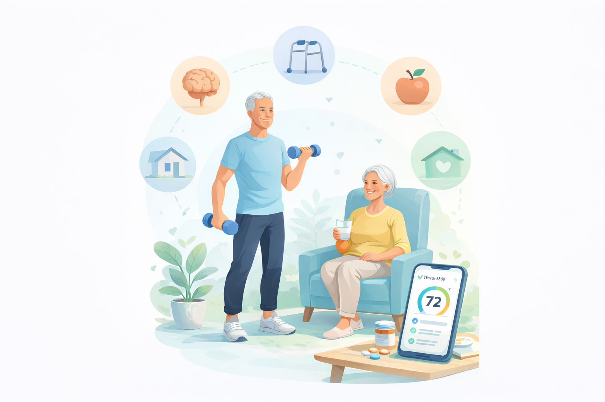

Thrive360
Because Independence Matters.
For screening and care-planning support only. This tool does not diagnose medical conditions and does not replace evaluation by a licensed healthcare professional.

| Name | Score | Change | Last Check |
|---|---|---|---|
| Mary S. | 61 | ↓ -2 | Apr 10 |
| John D. | 72 | ↑ +5 | Apr 12 |
| Evelyn R. | 84 | ↑ +3 | Apr 16 |
68
Average Thrive Index
14
Assessments this month
5
High-risk referrals triggered
10-Meter Walk Test
Measure a 10-meter walkway with clear start and end points.
Instruct the patient to walk at their normal, comfortable pace.
Begin timing when the first foot crosses the start line and stop when the first foot crosses the end line.
Allow use of customary assistive devices if normally used.
Observe gait pattern, balance, and safety throughout.
Timed Up and Go (TUG)
Patient starts seated in a standard chair with armrests.
On "Go", patient stands, walks 3 meters, turns, walks back, and sits down.
Use normal assistive device if applicable.
Start timing on "Go" and stop when patient is seated again.
Observe for instability, hesitation, or unsafe turning.
30-Second Chair Stand
Patient sits in a standard chair with arms crossed over chest.
On "Go", patient stands fully and sits as many times as possible in 30 seconds.
Count only full stands.
If arms are used, document this.
Stop test if patient becomes unsafe or fatigued.
4-Stage Balance Test
Test progressively: side-by-side → semi-tandem → tandem → single-leg.
Ask patient to hold each position for 10 seconds.
Do not allow support.
Stop if balance is lost or assistance is required.
Record highest level completed.
4-Square Step Test
Place four markers in a cross pattern.
Patient steps forward → right → back → left, then reverses.
Move as quickly and safely as possible without touching lines.
Start timing at first step and stop at completion.
Repeat if incorrect sequence is performed.
Driving & Community Mobility Screening
This section screens for factors associated with driving safety and community mobility. It does not independently determine fitness to drive and does not replace a formal driving evaluation.
Self-Reported Driving Concerns
Ask the client and/or family whether any recent driving-related concerns have been noticed.
Transportation Independence
Ask about current transportation habits, community participation, and recent changes in independence.
Clinical Interpretation
Clinician Setup
Seat the client comfortably with the device directly in front of them. Explain that these are screening tasks, not pass/fail tests. Complete one practice trial if needed. Record observations such as hesitation, confusion, impulsive tapping, or difficulty following directions.
Simple Visual Reaction Time
The client taps the test pad as soon as it turns green. The app will run 5 trials and calculate average reaction time, best reaction time, and missed/early taps automatically.
Choice Reaction Time
The client responds to the arrow direction. Press LEFT for ← and RIGHT for →. This screens response selection and divided-attention demand.
Go / No-Go Inhibition Screen
The client taps only when the cue says GO. They should not tap when the cue says NO-GO. The app will run 8 trials and record false taps and missed GO responses automatically.
Processing Speed Screening Notes
- Vision impairment
- Arthritis or motor coordination difficulty
- Touchscreen or mouse familiarity
- Fatigue
- Anxiety
- Hearing impairment
- Medication effects
- Attention fluctuations
Cognitive Testing Setup
Seat the client comfortably with the device directly in front of them. Explain that these are screening tasks, not pass/fail tests. Use normal hearing/vision supports. Document observations such as confusion, impulsivity, difficulty following directions, or fatigue.
Mini-Cog — Guided Administration
Click Start to show 3 unrelated words. Ask the client to repeat them once. Then complete the clock drawing task below. After the clock drawing, ask the client to recall the 3 words without cues.
Clock Drawing — Digital Screening Version
Ask the client: “Draw a clock. Put in all the numbers. Set the hands to 10 past 11.” The client may draw with a mouse, touchscreen, or stylus. Scoring remains clinician-guided.
Trail Making A — Digital Screening Version
Ask the client to click the circles in number order: 1 → 2 → 3, and so on. The app starts timing when Start is clicked and records errors automatically.
Trail Making B — Digital Screening Version
Ask the client to click the circles in alternating number-letter order: 1 → A → 2 → B, and so on. This digitally adapted screening task evaluates:
- Executive functioning
- Task switching
- Visual scanning
- Divided attention
- Processing speed
Digit Span — Guided Sequence
Click Start to generate a digit sequence. Read the digits aloud at roughly one digit per second. Mark whether the client repeated the sequence correctly. The app increases length after a pass and records the highest successful span.
Cognitive Screening Notes
- Mini-Cog
- Clock Drawing paradigms
- Trail Making Test A & B concepts
- Digit Span attention testing
- Screening
- Trend monitoring
- Clinical observation
- Identification of possible cognitive variability
- Education level
- Vision impairment
- Motor coordination difficulty
- Technology familiarity
- Fatigue
- Anxiety
- Language differences
- Hearing impairment
Mini Nutritional Assessment (MNA-SF)
Complete all questions based on the patient’s status over the past 3 months. Select the most appropriate response for each item. Score will be calculated automatically.
Diet Quality
Ask about typical daily intake with emphasis on protein, fruits and vegetables, meal consistency, and overall appetite. Use best clinical judgment if intake is unclear.
Hydration
Estimate average daily fluid intake and assess for dehydration symptoms such as dizziness, dry mouth, fatigue, constipation, or dark urine.
Weight & Intake Changes
Ask about unintentional weight loss and any recent decline in food intake over the last 3 months.
Entry / Exterior
Living Areas
Bathroom
Bedroom
Kitchen
General Safety
PHQ-2 (Depression Screening)
Over the last 2 weeks, how often has the patient been bothered by the following problems?
GAD-2 (Anxiety Screening)
Over the last 2 weeks, how often has the patient been bothered by the following problems?
Mobility
Tests completed.
Driving & Community Mobility
Driving-related screening factors reviewed.
Processing Speed
Reaction and inhibition screening completed.
Cognition
Mini-Cog, clock drawing, Trail Making, and Digit Span captured.
Nutrition
Nutrition screening recorded.
Home Safety
Safety checklist reviewed.
Mental Wellbeing
PHQ-2 and GAD-2 captured.
Your current profile shows mild risk for loss of independence, driven mainly by nutrition and cognition concerns.
Client demonstrates mild overall functional risk with greatest deficits in nutrition and cognition. Mobility, home safety, and mental wellbeing are relatively stronger areas at this time. Early intervention focused on intake quality, nutrition support, and ongoing cognitive monitoring may reduce future decline risk.
Your Thrive360 Summary
What this means
Your results show a moderate risk for loss of independence.
Your Wellness Snapshot
Strongest areas
- Strengths will populate here.
Areas to work on
- Needs will populate here.
Top 3 things to focus on
Recommended next steps
Call a healthcare professional if needed
- Guidance will populate here.
Follow-up plan
Follow-up guidance will populate here.
Clinical Assessment Report
Executive Clinical Summary
Composite profile indicates moderate overall risk.
Domain Snapshot
Domain Score Profile
Key Risk Drivers
- Risk drivers will populate here.
Clinical Recommendations
- Recommendations will populate here.
Detailed Test Results
Individual test findings are grouped by clinical domain. Results should be interpreted within the full clinical context.
| Domain | Test / Measure | Result | Clinical Interpretation |
|---|---|---|---|
| Detailed test results will populate here. | |||
Referral Considerations
- Referral considerations will populate here.
Recommended Interventions
- Recommended interventions will populate here.
Reassessment Plan
- Reassessment guidance will populate here.
Clinical Documentation Summary
Documentation summary will populate here.